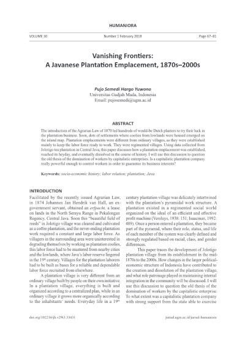
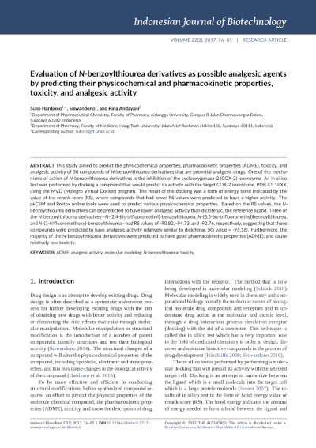
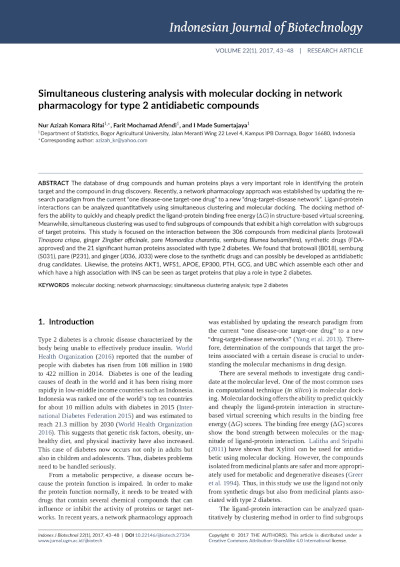

Bovine vitreous gel can reactivate replicative senescence of human dermal fibroblast
Maria Vianny Sansan, Sunardi Radiono, Muhamad Eko Irawanto, Yohanes Widodo Wirohadidjojo
Academic article abstract 2018 doi: 10.22146/ijbiotech.28228
MicroRNA-21 as a biomarker for ovarian cancer detection
Aprilia Indra Kartika, Siti Nur Chasanah, Akbar Satria Fitriawan, Dewi Sahfitri Tanjung, Addin Trirahmanto, Heru Pradjatmo, Teguh Aryandono, Sofia Mubarik5 Haryana
Academic article abstract 2018 doi: 10.22146/ijbiotech.35692
Low cost and comprehensive pork detection in processed food products with a different food matrix
Fenny Aulia Sugiana, Henni Widyowati, Muhammad Ali Warisman, Suryani, Desriani
Academic article abstract 2018 doi: 10.22146/ijbiotech.32372
Amylolytic ability of bacteria isolated from termite (Coptotermes sp.) gut
Putri Dwi Mulyani, Radhiyah Mardhiyah Hamid, Rifqi Zahroh Janatunaim, Yekti Asih Purwestri
Academic article abstract 2018 doi: 10.22146/ijbiotech.32445
Use of microsatellite markers to detect heterozygosity in an F2 generation of a black rice and white rice cross
Kristamtini, Taryono, Panjisakti Basunanda, Rudi Hari Murti
Academic article abstract 2018 doi: 10.22146/ijbiotech.33111
Isolation of actinomycetes from maize rhizosphere from Kupang, East Nusa Tenggara Province, and evaluation of their antibacterial, antifungal, and extracellular enzyme activity
Umi Fatmawati, Yulin Lestari, Anja Meryandini, Abdjad Asih Nawangsih, Aris Tri Wahyudi
Academic article abstract 2018 doi: 10.22146/ijbiotech.33064
Determination of secondary and tertiary structures of cervical cancer lncRNA diagnostic and siRNA therapeutic biomarkers
Arli Aditya Parikesit, Didik Huswo Utomo, Nihayatul Karimah
Academic article abstract 2018 doi: 10.22146/ijbiotech.28508
The aqueous extract of Gerrardanthus macrorhizus caudex enhanced doxorubicin activity in MCF-7 human breast cancer cells
Sari Haryanti, Yuli Widiyastuti, Slamet Wahyono
Academic article abstract 2018 doi: 10.22146/ijbiotech.32519

Tourist’s Perceived Risk and Image of the Destinations Prone to Natural Disasters: The Case of Bali and Yogyakarta, Indonesia
Erda Rindrasih
Academic article 2018 doi: 10.22146/jh.v30i2.32239
Misrepresentation of Science and Expertise: Reflecting on Half a Century of Indonesian Anthropology
Irwan Abdullah
Academic article 2018 doi: 10.22146/jh.v30i1.33429
Female Monsters: Figuring Female Transgression in Jennifer's Body (2009) and The Witch (2013)
Aidatul Chusna, Shofi Mahmudah
Academic article 2018 doi: 10.22146/jh.v30i1.31499
Cyclicity of Second-hand-ness: The Language and Translation of Afrizal Malna’s "Toko Bekas Bahasa A dan B"
Zita Reyninta Sari
Academic article 2018 doi: 10.22146/jh.v30i1.27389
Self-regulation as Correlates to Students’ Voices and Achievement in TOEFL Score
Monika Dini Kurniasari
Academic article 2018 doi: 10.22146/jh.v30i1.26173
Deconstructing Concealed Gayness Text in The Film Negeri van Oranje: Critical Discourse Analysis
Heri Setiawan
Academic article 2018 doi: 10.22146/jh.v30i1.26991
The Integration of Religion and Culture to Construct Social Identity Through The Pukul Sapu Ritual in Mamala Village, Moluccas
Flavius Floris Andries
Academic article 2018 doi: 10.22146/jh.v30i1.27603
Othering and Selfing: Reading Gender Hierarchies and Social Categories in Michel Houellebecq's Novel Soumission
Wening Udasmoro
Academic article 2018 doi: 10.22146/jh.v30i1.32122
"Are My Songs Literature?": A Postmodern Appraisal of Bob Dylan's American Popular Music Culture
Marwa Essam Eldin Alkhayat
Academic article 2018 doi: 10.22146/jh.v30i1.32137
Vanishing Frontiers: A Javanese Plantation Emplacement, 1870s – 2000s
Pujo Semedi Hargo Yuwono
Academic article 2018 doi: 10.22146/jh.v30i1.33431

Generation of recombinant scFv antibody against Ochratoxin A (OTA)
Ranya Pranomphon, Witsanu Srila, Montarop Yamabhai
Academic article abstract 2017 doi: 10.22146/ijbiotech.31121
NMR metabolite comparison of local pigmented rice in Yogyakarta
Dio N. Wijaya, Febri Adi Susanto, Yekti Asih Purwestri, Dyah Ismoyowati, Tri Rini Nuringtyas
Academic article abstract 2017 doi: 10.22146/ijbiotech.27308
The expression of growth factor signaling genes in co-culture IVM
Erif Maha Nugraha Setiawan, Hyun Ju Oh, Min Jung Kim, Geon A Kim, Seok Hee Lee, Yoo Bin Choi, Ki Hae Ra, Byeong Chun Lee
Academic article abstract 2017 doi: 10.22146/ijbiotech.27309
Agrobacterium tumefaciens-mediated transformation of Jatropha curcas L. with a polyhydroxyalkanoate gene (phaC)
Chesara Novatiano, Adi Pancoro, Erly Marwani
Academic article abstract 2017 doi: 10.22146/ijbiotech.27165
Allelic diversity of butyrophilin (BTN1A1) gene in Indian bovines
Manoj Kumar, Poonam Ratwan, Ramendra Das, Alka Chopra, Vikas Vohra
Academic article abstract 2017 doi: 10.22146/ijbiotech.30332
Evaluation of N-benzoylthiourea derivatives as possible analgesic agents by predicting their physicochemical and pharmacokinetic properties, toxicity, and analgesic activity
Suko Hardjono, Siswandono, Rina Andayani
Academic article abstract 2017 doi: 10.22146/ijbiotech.27171

Gelatin extraction from the indigenous Pangasius catfish bone using pineapple liquid waste
Yoni Atma, Hisworo Ramdhani
Academic article abstract 2017 doi: 10.22146/ijbiotech.32472
Mid-gestational exposure to histone deacetylase inhibitor suberoylanilide hydroxamic acid influence cortical interneuron and astrocyte in mouse brain
Nunung Yuniarti, Berry Juliandi, Tsukasa Sanosaka, Kinichi Nakashima
Academic article abstract 2017 doi: 10.22146/ijbiotech.25986
Cloning of acetyl-CoA acetyltransferase gene from Halomonas elongata BK-AG18 and in silico analysis of its gene product
Ni Putu Yuliastri, Enny Ratnaningsih, Rukman Hertadi
Academic article abstract 2017 doi: 10.22146/ijbiotech.27235
Bioactivity and genetic screening of marine actinobacteria associated with red algae Gelidiella acerosa
Maria Ulfah, Noer Kasanah, Niken Satiti Nur Handayani
Academic article abstract 2017 doi: 10.22146/ijbiotech.25920
Simultaneous clustering analysis with molecular docking in network pharmacology for type 2 antidiabetic compounds
Nur Azizah Komara Rifai, Farit Mochamad Afendi, I Made Sumertajaya
Academic article abstract 2017 doi: 10.22146/ijbiotech.27334

Anthocyanin, nutrient contents, and antioxidant activity of black rice bran of Oryza sativa L. 'Cempo Ireng' from Sleman, Yogyakarta, Indonesia
Pratiwi Apridamayanti, Rarastoeti Pratiwi, Yekti Asih Purwestri, Woro Anindito Sri Tunjung, Rumiyati
Academic article abstract 2017 doi: 10.22146/ijbiotech.26401

Biofilm formation analysis and molecular identification of copper-resistant bacteria isolated from PT Freeport Indonesia’s tailings
Maria Massora, Erni Martani, Eko Sugiharto, Roberth Sarwom, Tumpal Sinaga
Academic article abstract 2017 doi: 10.22146/ijbiotech.24810
Assessment of genetic diversity among surian Toona sinensis Roem in progenies test using random amplified polymorphic DNA markers
Jayusman, Muhammad Na’iem, Sapto Indrioko, Eko Bhakti Hardiyanto, ILG Nurcahyaningsih
Academic article abstract 2017 doi: 10.22146/ijbiotech.25798
Expression of haloacid dehalogenase gene and its molecular protein characterization from Klebsiella pneumoniae ITB1
Ridani Rino Anggoro, Enny Ratnaningsih
Academic article abstract 2017 doi: 10.22146/ijbiotech.26004
Evaluation of rapid detection kit against avian influenza A virus and h4 subtype for field sample
Michael Haryadi Wibowo, Tri Untari, Sidna Artanto, Krisdiana Putri, Surya Amanu, Widya Asmara
Academic article 2017 doi: 10.22146/ijbiotech.26792
Transient transformation of artemisinic aldehyde ∆ 11 (13) double bond reductase (dbr2) gene into Artemisia annua L.
Elfahmi Elfahmi, Fany Mutia Cahyani, Andre Ditya Maulana Lubis, Tati Kristanti, Sony Suhandono
Academic article 2017 doi: 10.22146/ijbiotech.27956

Detection and identifcation of adherence genes of intestinal-origin Lactobacillus and Pediococcus strains grown on gastric mucin in vitro
Widodo, Sri Lestari, Widya Asmara
Academic article 2017 doi: 10.22146/ijbiotech.24346
Identifcation of antibiotic producing endophytic microbe isolates from a national park in Java island
Sri Yuwantiningsih, Sebastian Margino, Subagus Wahyuono
Academic article 2017 doi: 10.22146/ijbiotech.24345
The effect of methanol extract of soybean seeds (Glycine max L.Merr.) on the histology and immunohistochemical distribution of Cyp19 aromatase in rat testis (Rattus norvegicus L.)
Retno Aryani, Sukarti Moeljopawiro, Laurentius Hartanto Nugroho, Pudji Astuti
Academic article 2017 doi: 10.22146/ijbiotech.24199
Determination of allelopathic potential in mahogany (Swietenia macrophylla King) leaf litter using sandwich method
Arnia Sari Mukaromah, Yekti Asih Purwestri, Yoshiharu Fujii
Academic article 2017 doi: 10.22146/ijbiotech.16456